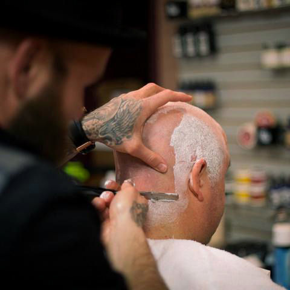
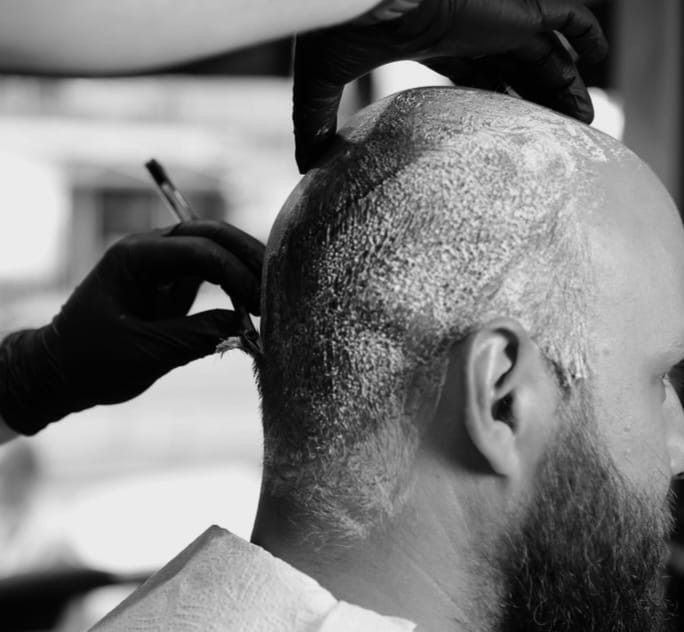

Milyen típusú kopaszodás létezik?
A hajritkulás nem egységes jelenség – más-más mintát mutat, és más-más hajvágással kezelhető a legelőnyösebben. Mielőtt stílust választasz, érdemes tudni, melyik típussal állsz szemben.
A leggyakoribb forma a visszahúzódó homlok – ilyenkor az első hajvonal fokozatosan hátrább tolódik, jellemzően a halántéknál kezdve. Sokan ebben a fázisban nem változtatnak a hajvágásukon, holott már ekkor érdemes lenne. A másik jellemző forma a ritkulás a fejtető közepén, ahol a haj elvékonyodik, de az oldalakon még megmarad. A harmadik, előrehaladottabb forma a kettő kombinációja – és végül sokaknál ez vezet a teljesen kopasz megjelenéshez.

Legjobb hajvágások kopaszodás esetén
Nem minden rövid hajvágás egyforma – és nem minden stílus válik előnyére a ritkuló hajnak. Az alábbiakban azokat a megoldásokat gyűjtöttük össze, amelyek ténylegesen jól mutatnak kopaszodás esetén.
Buzz cut
Az egyik legelőnyösebb megoldás. Egységes, rövid hossz az egész fejen – nem emeli ki a ritkább részeket, hanem elfogadja és keretbe foglalja a kopaszodást. Határozott, magabiztos megjelenést ad.
Fade hajvágás
A fade segít az átmenetek elsimításában a sűrűbb és ritkább részek között. Különösen visszahúzódó homlok esetén hatásos – a megfelelő fade elhelyezésével az arányok kiegyensúlyozottabbak lesznek.
Rövid texturált frizura
Ha még van elegendő haj a fejtetőn, egy tépett, texturált stílus optikailag dúsabb hatást kelt. Fontos, hogy ne legyen túl hosszú – a hossz csak ráerősít a ritkulásra.
Teljesen rövid vagy borotvált
Előrehaladottabb kopaszodás esetén sok férfi számára ez a legmagabiztosabb döntés. Nem kell küzdeni a hajjal – a letisztult, borotvált megjelenés erőt és magabiztosságot sugároz.

Mit érdemes kerülni kopaszodás esetén?
Ahogy fontos tudni, mi működik, ugyanolyan fontos tisztában lenni azzal, mi nem. Vannak hajvágási és haj viselési szokások, amelyek kopaszodás esetén csak rontanak a megjelenésen – még akkor is, ha korábban jól mutattak.
- Hosszú haj ritkuló fejtetőn – a hossz csak hangsúlyozza az elvékonyodást, nem takarja el
- Átfésülés, "eltakarás" – a maradék hajszálak átfésülése a kopasz részre sosem meggyőző, és szeles időben azonnal leleplezi magát
- Egyenletes hossz az egész fejen – ha az oldalak ugyanolyan hosszúak, mint a fejtető, a ritkulás még szembetűnőbb
- Régi stílus megtartása – ami 10 évvel ezelőtt jól állt, ma már más hatást kelthet; érdemes frissíteni
Miért érdemes barber shopba menni kopaszodás esetén?
A kopaszodáshoz illő hajvágás megválasztása nem egyszerű – főleg akkor, ha valaki évek óta ugyanazt a stílust hordta, és most változtatásra van szükség. Egy általános fodrász levágja, amit kérsz. Egy profi barber megmondja, mit kellene kérned.
A Bosphorus barber shopban minden hajvágás konzultációval kezdődik. A borbély megnézi az arcformát, a haj állapotát, a ritkulás mintáját – és ezek alapján konkrét javaslatot tesz. Nem sablonmegoldást kapsz, hanem olyat, ami ténylegesen a te arányaidhoz és hajtípusodhoz van igazítva.
- Személyre szabott konzultáció – arcforma és haj állapota alapján
- Buzz cut, fade, rövid texturált stílus – minden technika elérhető
- Tapasztalt borbélyok, akik rendszeresen dolgoznak ritkuló hajjal
- Barber Budapest 7. kerület – könnyen megközelíthető a belvárosból
Kérd ki egy profi barber véleményét
Ha kopaszodással küzdesz és nem tudod, milyen hajvágást válassz – foglalj időpontot a Bosphorus barber shopba. A borbély megnézi a helyzetet és konkrét javaslatot ad. Nem kell találgatni.